Version 3 with one luxury addition: a thin gold coachline along the shoulder of the car, the hand-painted line Rolls-Royce is known for. It starts as a point over the front wheel, runs the length of both doors just above the handles, and sweeps down to end at the tip of the tail light. Everything else is version 3.
Photo-style images made with Magnific (AI, Nano Banana Pro) to show the feel of the car in real San Diego light. They are concept images, not photos of the real car. Each one was proofread letter by letter; the exact artwork is in the proofs further down.
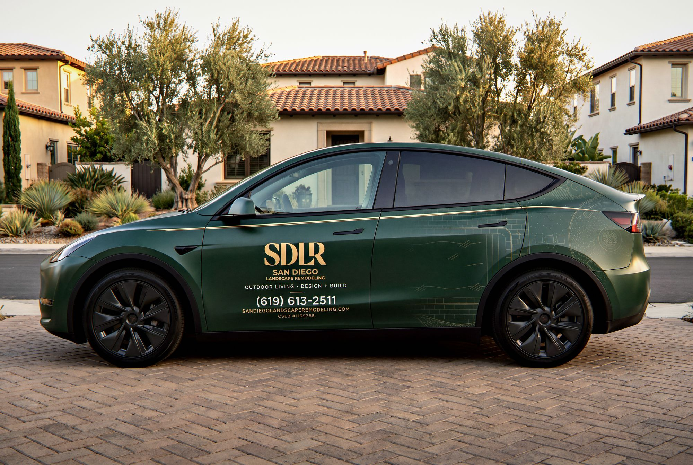
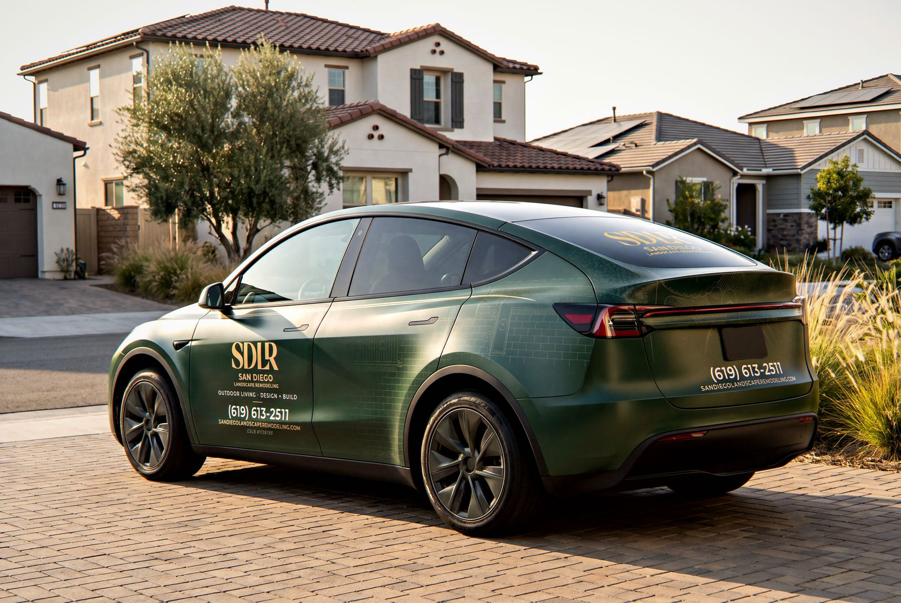
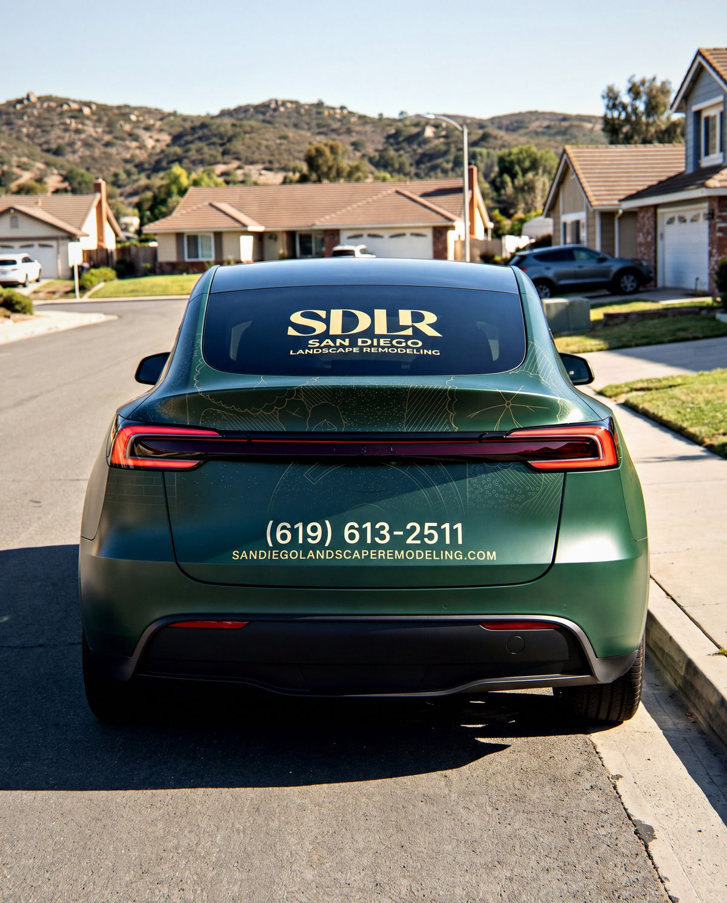
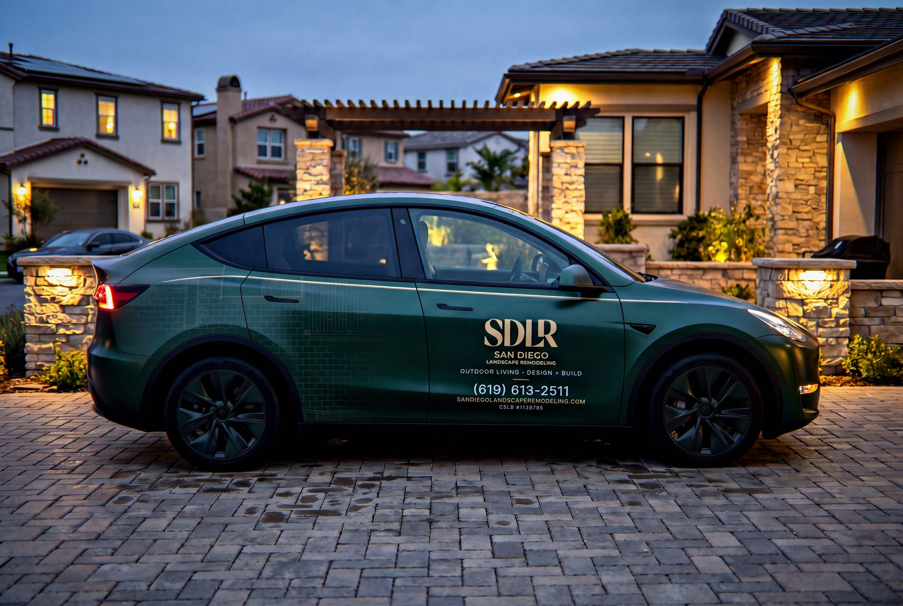
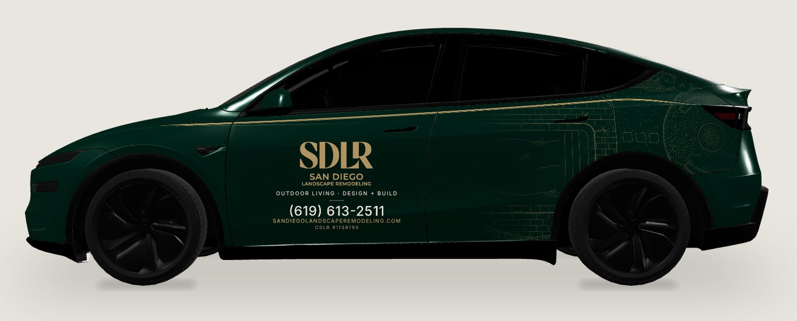
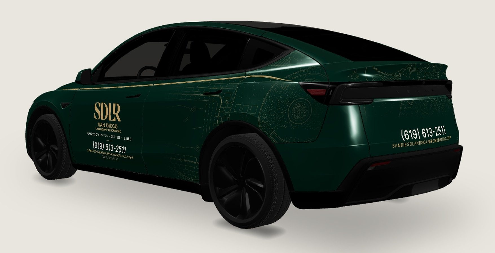
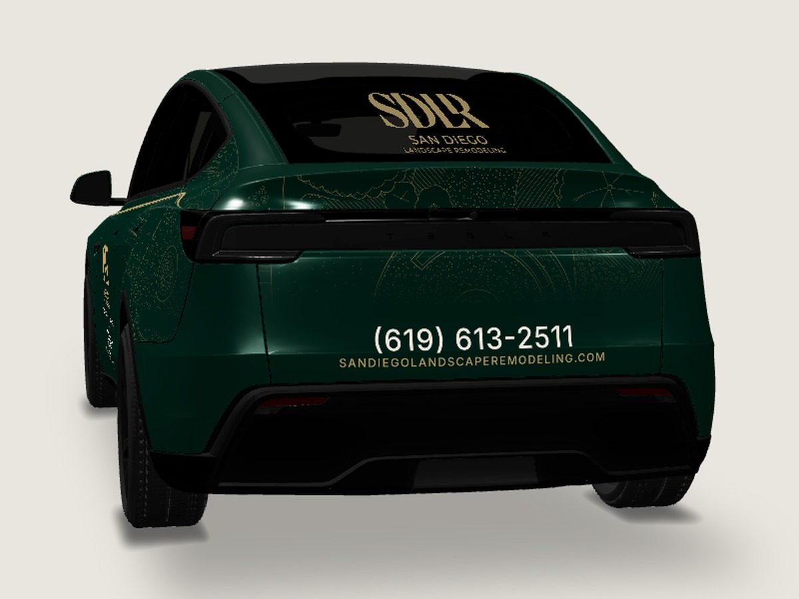
Every panel unfolded at true scale (1:10). This is the layout the wrap shop prints from.
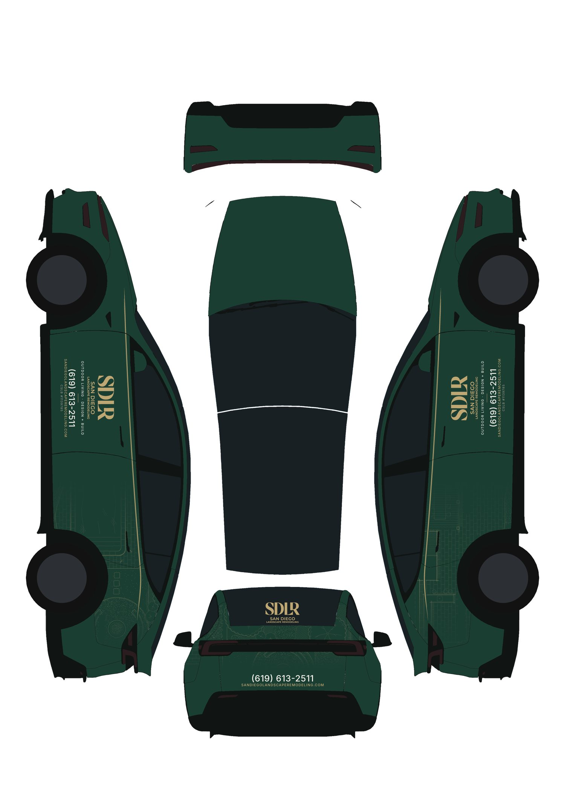
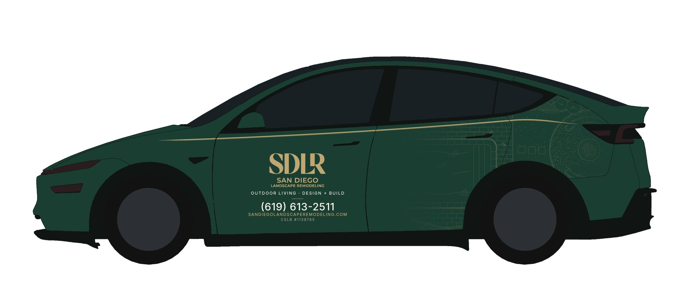
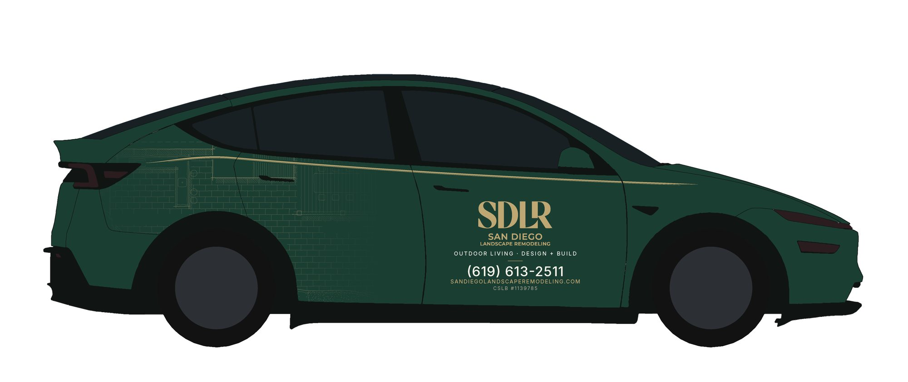
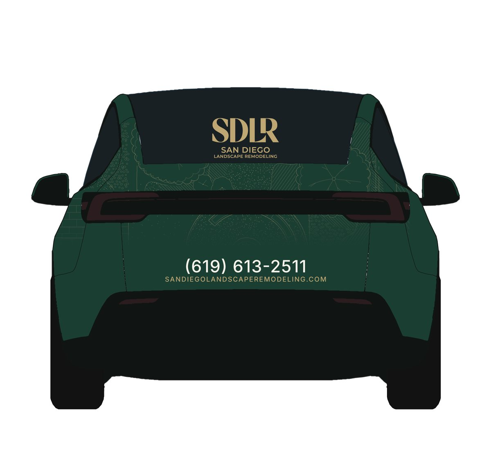
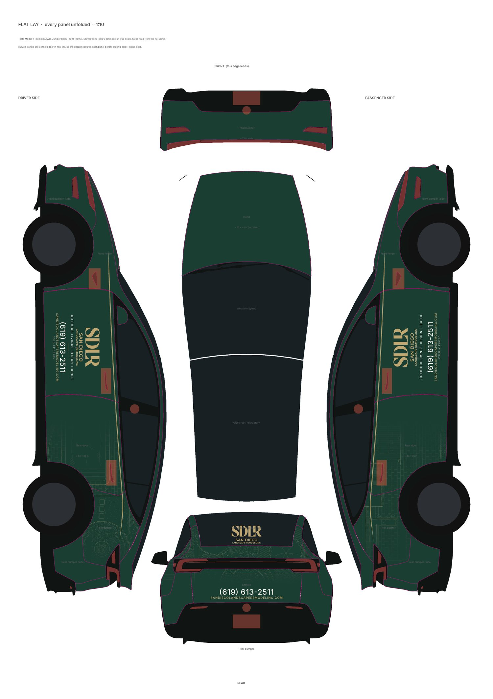
| Body | Deep green film (Inozetek Metallic Racing Green MSG111 is the target) |
| Front doors | Centred stack, both sides: SDLR lockup (gold, 17 in) · OUTDOOR LIVING · DESIGN + BUILD (cream) · gold rule · (619) 613-2511 (cream, 2.25 in) · SANDIEGOLANDSCAPEREMODELING.COM (gold) · CSLB #1139785. |
| Coachline | Gold double line (0.22 in + 0.06 in), tapered, front wheel to tail light, both sides |
| Rear doors, quarters, liftgate | The site plan in gold line art at 70%, fading in and out |
| Rear glass | Gold lockup, ~13 in, cut vinyl |
| Liftgate | (619) 613-2511 in cream, 2.4 in, over the gold website |
Working files (layered .ai, print PDF at 1:10, proof PDF, README, full-size photos) live in Drive:
02 Clients/san-diego-landscape-remodeling/Vehicle/wrap-design/2026-11-21-v4/ (versions 1 to 3 kept beside it)